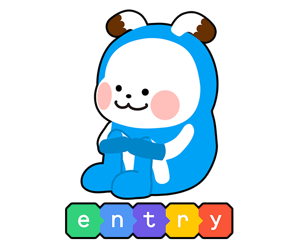
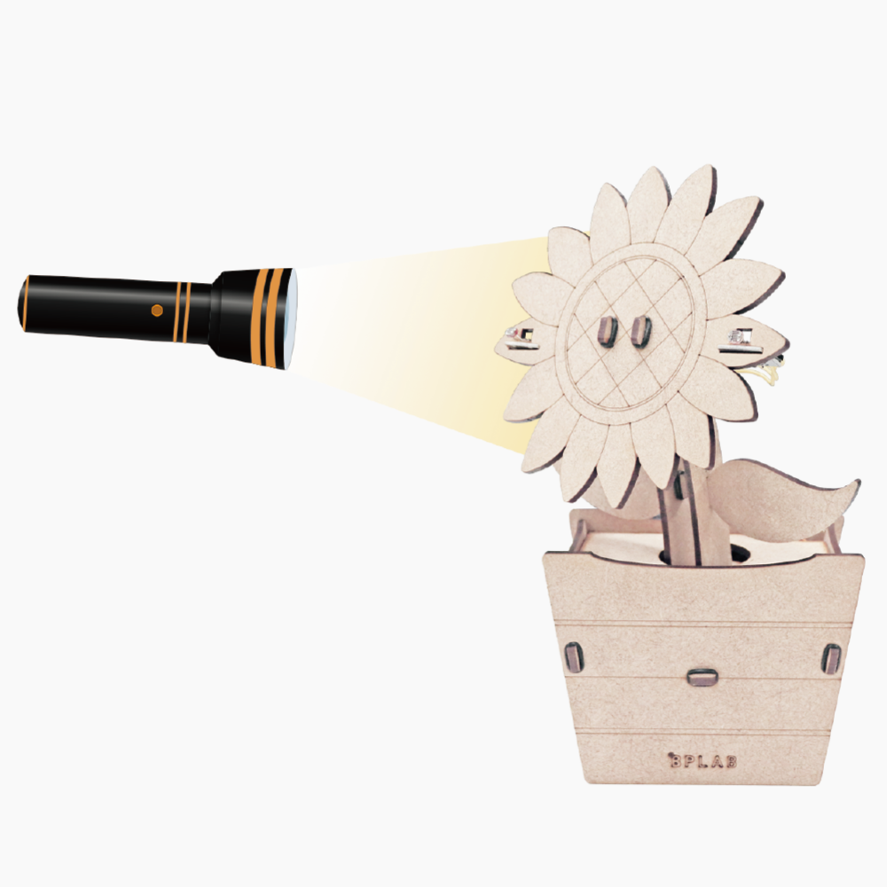

11월 20일 진행한 SW의 날 행사에서 햄스터봇을 이용한 미로탈출 게임을 계획하고 부스 운영을 진행했다.
햄스터봇을 엔트리에 연결한 후 찾아온 친구들이 직접 코딩을 할 수 있도록 옆에서 코드를 설명하고 보조했다. 스크래치나 Python을 사용하는 방법도 고려했지만, 많은 친구들이 엔트리에 더 친숙하고 블록코딩이 부스 운영에 있어서 시간관리에 효율적이기에 엔트리로 결정하게 되었다. 이후 같은 팀 3명을 이끌며 미로를 제작하고 기본적으로 제공할 코드에 대해 논의하는 등의 여러 활동을 하였다. 이 외에도 다른 부스 운영에 있어서 운영방식에 대한 조언과 토의를 진행하여 SW의 날에 친구들이 부스 체험을 활발하고 다양하게 체험할 수 있게 하기 위해 노력했다.
이후 5~6교시 진행한 멘토링 시간에는 '해바라기 아두이노'를 제작하는 시간을 가졌다. 아두이노를 조립한 후 조도센서가 감지하는 빛에 따라 밝은 곳으로 해바라기의 고개가 이동하도록 하는 프로그램으로, 기본적인 코드는 2학년 친구들과 함께 작성한 후 빛의 양을 감지하는 부분에 빈칸을 뚫어 체험하는 친구들이 코드를 함께 작성할 수 있도록 하였다. 직접 수치를 조정해 실험하며 아두이노에 대한 친근함을 높이고 코딩에 대한 즐거움을 높이는 것이 목적이었고, 실제 제작된 결과물에 대해서도 많은 학생들이 만족했기에 신체적으로는 힘들었어도 상당히 뿌듯한 활동으로 기억에 남았다.